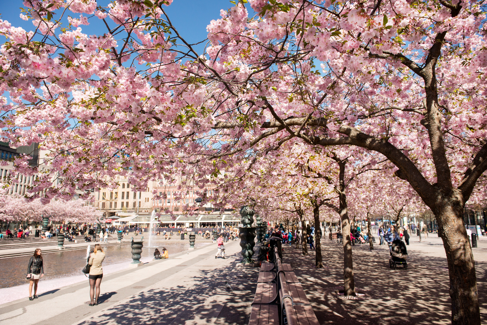
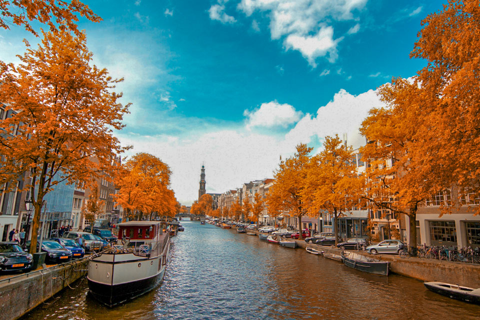
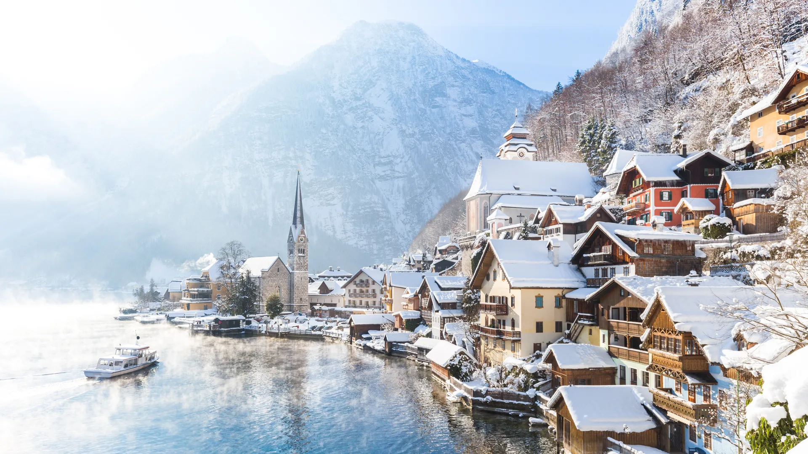

Ready for your next adventure? Browse through our list of countries and cities to find the perfect spot for your vacation — from bustling metropolises to peaceful nature retreats.
Italy is a country in south-central Europe, shaped like a boot, that occupies a peninsula jutting into the Mediterranean Sea. It has varied landscapes, from the Alps in the north to the Apennine Range running down its length. The country's political geography has led to independent towns and cities with distinct cultures.
Italy is known for its contributions to visual arts, literature, music, philosophy, culinary arts, and sciences. It was at the forefront of the Renaissance, with artists like Michelangelo and Leonardo da Vinci. Italy is also a world leader in high fashion, centered in Milan.
Hong Kong is not a country, but a special administrative region (SAR) of China. It is located on the south coast of China, east of the Pearl River estuary and bordered to the north by Guangdong province.
Hong Kong has a free-trade policy and is one of the world’s great centers of trade. There are no tariffs on imports, with the exception of some luxury items. Its economy has developed in manufacturing, trade, and shipping, and it is a regional financial center.
Sydney is the capital of New South Wales, Australia, and it's the largest city in the country. It has a big harbor and is an important port in the South Pacific.
Sydney is known for its outdoor activities like swimming, surfing, and sailing. Bondi Beach and Palm Beach are famous beaches. The city also has many parks, including Royal National Park, the world's second national park. Cultural attractions include the Sydney Opera House, the Australian Museum, and the Art Gallery of New South Wales.
Sydney has a warm, sunny climate with average temperatures from 72°F (22°C) in January to 55°F (13°C) in July. The average rainfall is 47 inches (1,200 mm) per year.
|  | |
 |  |
|---|---|---|---|
| Where to go in Spring | Where to go in Summer | Where to go in Autumn | Where to go in Winter |
| Fresh air, green parks, and the smell of new beginnings. | The ocean is calling. Dive into the best adventure of the year. | Pumpkin spice, warm sweaters, and breathtaking mountain views. | Experience the northern lights and the magic of snow. |